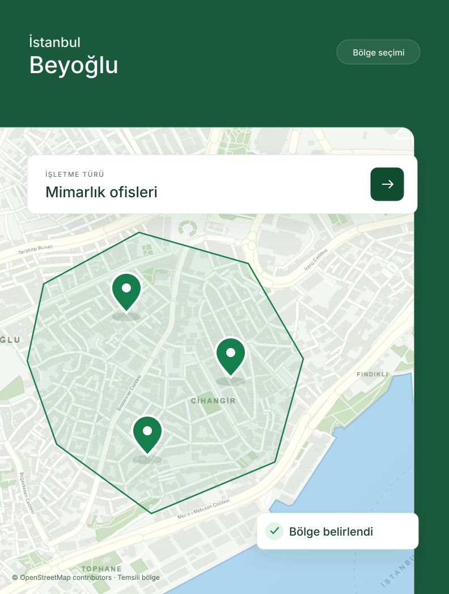
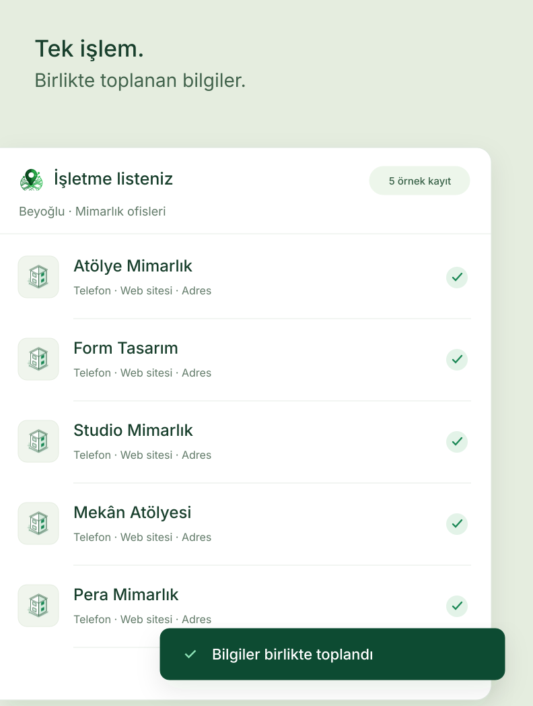
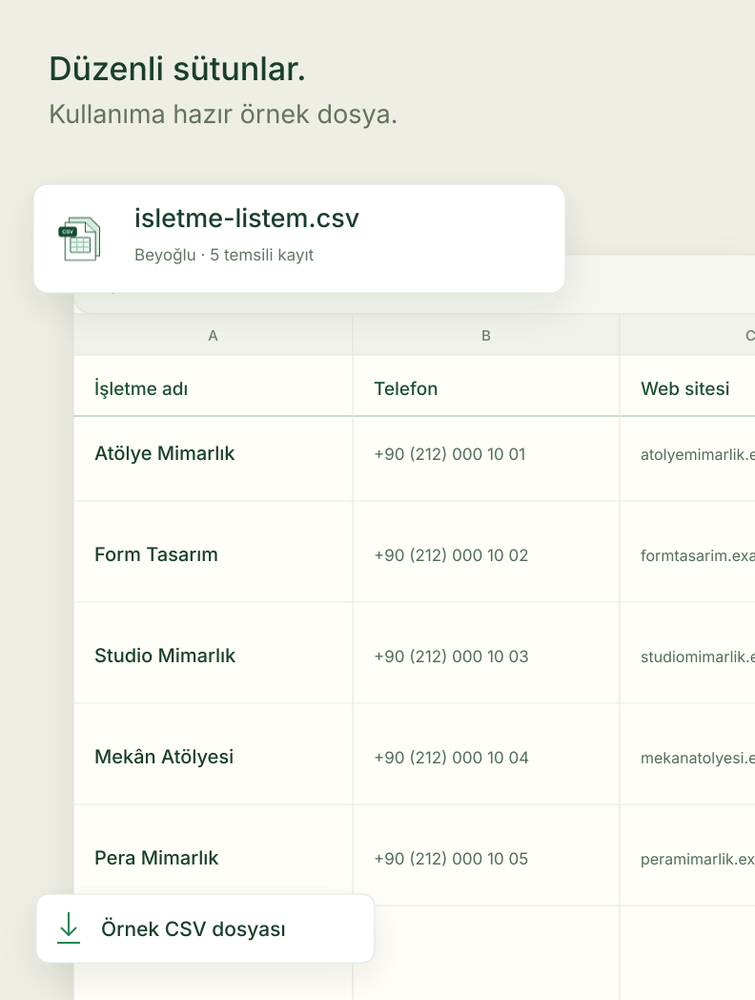

Sabit ürün görselleri · Başlıklar görsel dışında · Siteye eklenmeyen tasarım önizlemesi

Şehir ve ilçenizi seçerek araştırmanıza başlayın.

İşletme bilgilerini tek tek kopyalamadan bir araya getirin.

CSV örneğinin sütun yapısını inceleyin.